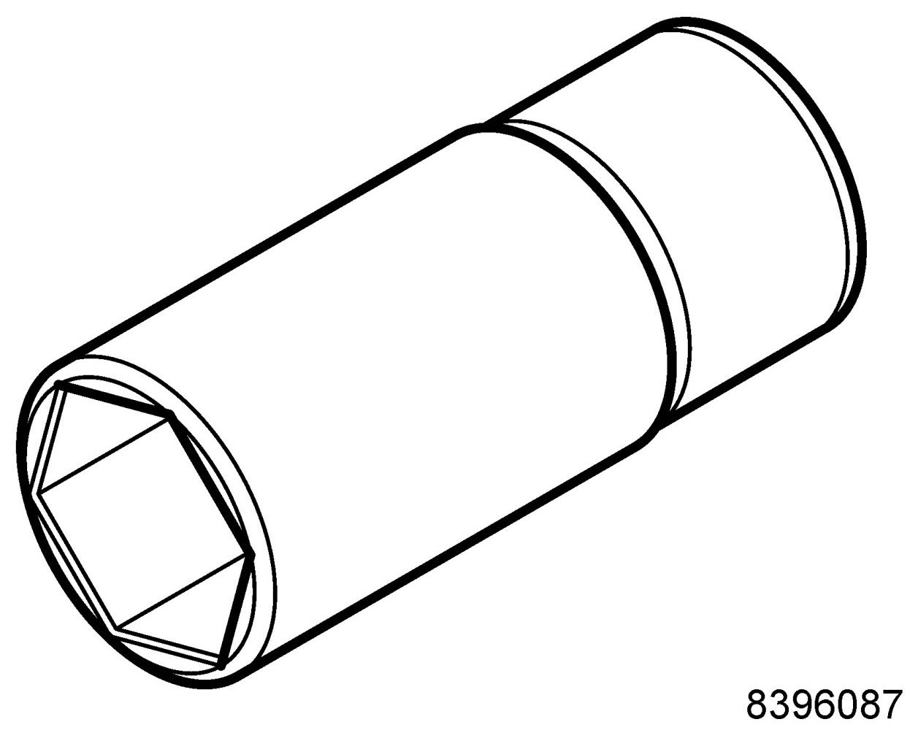

Operation CHARM
: Car repair manuals for everyone.
Home
>>
Saab
>>
2011
>>
9-3 FWD (9440) L4-2.0L Turbo
>>
Repair and Diagnosis
>>
Powertrain Management
>>
Computers and Control Systems
>>
Coolant Temperature Sensor/Switch (For Computer)
>>
Tools and Equipment
Coolant Temperature Sensor/Switch (For Computer): Tools and Equipment
83 96 087 Special Socket, Coolant Temperature Sensor

86 12 822 Toolboard T3 Engine
Group: Engine